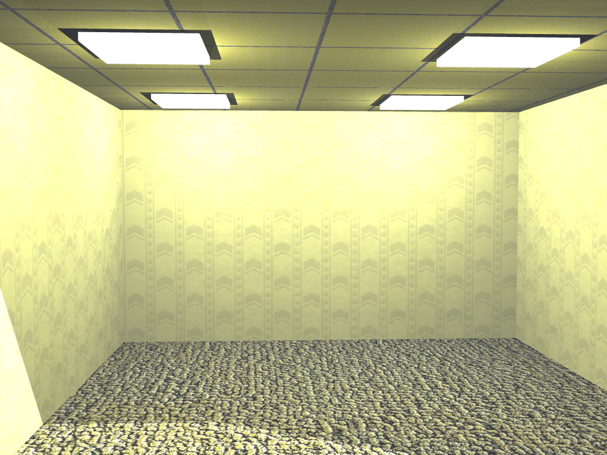

it was the temporary name for it during stardance but i dont want to change it
are you actually allowed to have the things on the drive public?
yep! ive made sure anyone contributing to the drive is aware that everything will be made public
what happens when i click on "this is a portfolio btw"
idk
why are you called lazerkat?
its a name i made up yay
w
yes
why do you hide args in some of your projects?
normally just to make it funner for myself to make, as i easily get distracted from projects. I am doing really well with keeping on top of this website though!
what is your favourite color?
orange! but light golden rod yellow is good as well. light golden rod yellow is the main color of this page because orange looked to over the top
ProjectsGoogle drive
The google drive is a shared drive containing almost 400gb of archives from my old school, my friends and pc backups that i dont mind other people seeing. if you would like access to this magical drive, contact me at lazerkato.o@gmail.com, as i cant let everyone view.
here is barnaby from the drive
he is very red
Intrests
I like
Coding
HTML
Python
JS
CSS
boats
science
particles
gmo and dna
Hardware (sort of)
Lasers
Light
Sound (I own 6 speakers)
Radio things
open source
archival
BOATS
Bass
sort of guitar
boats
food
taking apart batteries
Old stuff
Records
78s
i have an old record player from 1930s
not an item but ok
ukelele
flute
walking
playgrounds
youtube
dreamcore
frutiger aero
90s web design
Ideas
i want to make a tcg but i need a printer.. ill get one from facebook marketplace probably
boats are so cool
what if i make a boat lol
i cant wait until not-willem (cool-pancakes) finishes the bio amp.. i so want to train the model to get vision
i worked on homepl (a home photolithography machine) for a bit but gave up..
i wish i wouldnt give up so easily on projects...
bryce 2.1 is the best program ever
i rendered this backrooms scene after seeing the movie during spanish class lol

like i rendered at in spanish
after seeing the movie
the week before
i just noticed the light bit in the corner
that happened because i rendered it without the back wall
whoops
I lowk want to do some GMO things
like make slime molds move faster
that seems so fun!
I should get a protein folding program
I just had crunchy nut cereal for breakfast
crunchy nut is the best cereal
obviously
science is so cool
and coding
coding and science are so cool
genetically modified organisms can kinda combine the two
because you can write code to make GMOs
then use science to make them real
i would love a color tank printer
and a photolithography machine
but they are hella expensive
i have a b&w printer
but its almost out of ink :(
i want to turn my bedroom into a lab lol
i have my server and my printer in there rn
willem stole the printer cord
Journaling
At home, I have a journal where I write a page a day.
I have been doing this for
Loading..
years! with almost no skips!
in other words, thats
Loading..
pages! (or days)
which is nuts.
and the numbers are live btw
In my journal, i write a whole pages worth of text, then when i get up in the morning, i write about my dreams! The dream journal is in a doc so again, contact me at lazerkato.o@gmail.com if you want access to it.
I really enjoy just the idea of contributing to something large. There is just something about adding files to a drive, writing pages, archiving all of the pages in my room and other things that involve contribution that makes me really happy!
in case you couldn't tell already i love open source things
here is a little snippet from my dream journal
My friend group were superheroes but my power was to give only one thing away at a time. I also found a school that was so strict that they never let the kids leave. Oh and as a superhero group, we had never actually saved anyone. Our nemesis, mr teleport, had teleported a person inside our wall but instead of us saving her, we called paramedics but they wouldn't come in due to the pictures on the wall.
but normally it isn't that long..
sometimes it will be like
do you want da frog couch only $389
or even
eggs
which is pretty funny.
i have also requested a .csv of the data from the bathroom scale, so i can find out my weight on any given day, but so far, the people have not responded. very sad.
also, i have a area in my room where i store EVERY page that i have made/worked on in binders. The oldest pages I have are from 2018 which is super cool!
i love writing
right now, I am copying in more pages onto the doc. I do not know how many pages I will end up doing today. I just need to write so I don't lose my stardance streak.
Education
Schools and programs i have learnt coding at
Wellington High School (best school)
Code Camp at queen margaret college (w)
StarDance Challenge (very learn)
Code Club at WHS (w mr barrow)
sElF lEaRnInG oMg
yes i am educate
Tools
Here are the tools i have access to within my home
Computer (ThinkPad T430)
Computer (Custom Made but not working rn)
Monitor (Basic LG one)
3D Printer (not-willem (cool-pancakes)'s but I can use it)
Digital Caliper (again not mine)
B&W Printer (mine but not color pls give me color)
Server (132GB RAM, 32 CPUs, 6TB Storage, but very power consuming so i cant run it too often)
1080p Camera (Logitech)
RGB Mouse (Logitech)
RGB Keyboard (found at an op shop)
food
water
AliExpress (for parts)
A little container we 3d printed (to store parts)
Contacts
In case the email wasn't enough, here are my contacts
I don't really play games that often. I mostly focus on coding, but when i do, its normally with my friends because i am NOT a chud (although i have spent a ton of hours on this website lol)
The video games I play are:
Minecraft (LazerKatTheGreat)
Roblox (lazerkato_o but not too often)
Windows 3D Pinball (peak)
Doom (the original)
SpaceFlight Sim
yeah thats about it..
i dont play that many games
RenderLight Studios
RenderLight Studios is a sort of company that I made which makes animations sometimes, but mostly is known for the server, with like 200+ people as of typing. I do not check it as often as I used to, so the occasional spammer appears, and idk if the verification bot I installed even works, but you can join it here.
I won't go into too much detail here as most of the info about it is on the website so i reccomend that you check that out
please read this the shake effect took far too long im crine
I am still chudmaxxing so I do not have any jobs. I suppose stardance could count, because I did just buy a smart watch.. I am mostly on the lookout for jobs right now. If you are an employer or something, please contact me! I would love a coding job :) i might be a bit young tho........
I'll probably stick to stardance or any other things that hack club make or other competitions for now.
i love stardance btw
light golden rod yellow
im bored btw
light golden rod yellow
light golden rod yellow
light golden rod yellow
light golden rod yellow
light golden rod yellow
light golden rod yellow
light golden rod yellow
light golden rod yellow
light golden rod yellow
light golden rod yellow
light golden rod yellow
light golden rod yellow
light golden rod yellow
light golden rod yellow
light golden rod yellow
light golden rod yellow
light golden rod yellow
light golden rod yellow
light golden rod yellow
light golden rod yellow
light golden rod yellow
light golden rod yellow
light golden rod yellow
light golden rod yellow
light golden rod yellow
light golden rod yellow
light golden rod yellow
light golden rod yellow
light golden rod yellow
light golden rod yellow
light golden rod yellow
light golden rod yellow
Coding Languages
I can currently code in: HTML, some CSS, some JS, Scratch, PenguinMod, Roblox Studio, Blender, Bryce 2.1, some BASIC, Windows CMD, some Linux CMD and Python
I am fluent in HTML, Scratch, PenguinMod and Blenderish
..but no one is truly fluent
pls hire me someone
Music
I do a lot of music!
I sometimes make music by myself, and when i do, I either write it in my notebook or make it on garageband on my phone.
I have a small collection of music I like which I released on soundcloud, but I don't think soundcloud got all of the songs, so heres the drive link and heres the soundcloud link
I am also currently in a band with some of my friends and I have a very updated google drive folder containing all of the recordings, covers, and final songs that we have recorded. Its a rock band. If you want the link, contact me, because it is a little more private.
Here is a recent recording of our song! just a demo btw (my phone was way too close to alfie's amp so he is very loud. (alfie is the vocalist btw))
In our band, I am the bassist, Barnaby is the guitarist, Alfie is the vocalist, and _____ is the drummer (hes broken his leg so i haven't seen him in ages so i cant ask him for permission to be on this page)
New Zealand
If you didn't know already, I am from New Zealand. I was born here. It is very cool!
In my humble, non biased opinion, New Zealand is the best country
I would highly reccomend any person not living in new zealand to move to new zealand
there are no guns!
there are funny birds!
you learn maori!
good education system!
egg headed prime ministers!
w new zealand!
except..
you need a permit to do gmo things
because we have too much lovely wildlife!
Protein Folding
I just did my first protein folding on my server!
i simulated a green dna!
it makes slime molds glow green under uv light
very cool
very green
some people made a version that glows red
w people
it takes sooo long to do anything tho
if i want to run a smol simulation then thats another 6 hours gone
i want to make the slime mold really fast by modifying the rate at which the muscles expand and contract
i just wish i had a better pc
wink wink
if you have ANY spare pcs and are near wellington then PLEASE message me
using the contacts
thing
i think i'll just spend years of my life making fast slime molds lol
that would be a cool project
the only problem is that in nz, you can't import custom dna without a permit
I think that AI can sometimes be good, but it is usually bad.
As a human, I have experienced the pain of getting AI forced into literally everything I have, and it is really annoying
I think it can be good, only as a tool (eg, chatgpt) and used sparsely. Like if you use chatgpt to give you help on a peice of code, like "how do i make this text bigger", etc, then it is good. As long as you know what it is doing to your code/writing/whatever and you aren't using it to write the entire thing, then, yes, in my books it is ok!
however, when people use AI to write their entire code, and don't know how it works, and don't make any edits, then, i don't really want see "your" code.
ESPECIALLY the people who brag about their ai code.
rudra is a prime example
AND the people that say "ai is the future of coding and all coders should be replaced by ai".
So sometimes, text based models are ok, but image models. image models are the worst.
they blatantly steal people's art and make people pay to use their model that they trained on their art.
they also all look terrible and most of the time, people can tell that it is ai. so if people use it for branding, it isn't going to work on anyone.
in fact, there may actually not be ANY reason to use ai except for generating funny images.
i just don't see how it can be used in the real world because EVERYONE can tell when something is ai.
it's just stupid!
The people who say AI art is their "custom" work and say that AI will replace artists are just delusional.
Big companies are investing billions of dollars into AI without actually looking at what it actually does for society.
Nothing.
Almost everyone hates AI right now.
Except that small few who are so delusional that they think the ONLY way to make art and writing is through ai. and then they hate real people for being creative.
if real artists and real writers didn't exist, then they would not have any ai tools!
So in short, I really dislike ai. It is ok if you use it either in a stupid way, or very very occasionaly. otherwise, don't brag about "your art" and "your writing" if it is just ai.